Please contact us at language@ssband.org to find out about upcoming Bingo events for SSBMI Tribal Members or to ask any other questions.
How to play
Instead of using standard Bingo cards that use letters ("B", "I", "N", "G", "O") and numbers, we use custom Bingo cards that feature numbers ("1", "2", "3", "4", "5") and animals.
During a game, the caller calls out a number followed by the name of an animal to let players know how to cover their Bingo cards. For example, if they call out...
Sappúy, Olé
...then players cover Coyote (Olé) in the 3 (Sappúy) column on their card. Or if they call out...
Wíttee, Lisnó
...then players cover Lisnó (Hummingbird) in the 1 (Wíttee) column on their card. Otherwise, the game is play just like standard Bingo. If a player covers five animals in a row horizontally, vertically, or diagonally, they shout Halém ni! (I win!) to let everyone know they have a Bingo.
Bingo is a fun game for all ages and a great way to practice vocabulary. We focus on numbers and animal names in our current version of Bingo, but you can also play using other semantic domains like plants, foods, or clothing to practice other vocabulary.
Here, you can listen to audio recordings of the Nisenan numbers and animal names that we use, as well as other gameplay language, in order to practice the language at home. You can also download a copy of the "cheat sheet" that we share at our Bingo events by clicking here.
Numbers
Wíttee
Peen
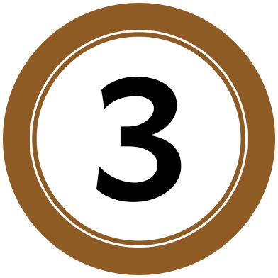
Sappúy
C’ɨɨy
Máawɨk
Animal names
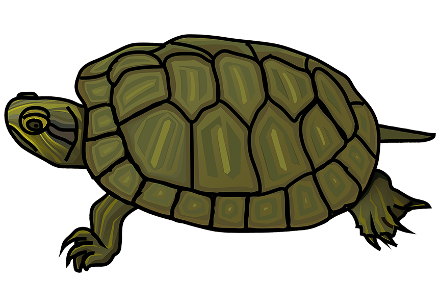
Awán
'Turtle'
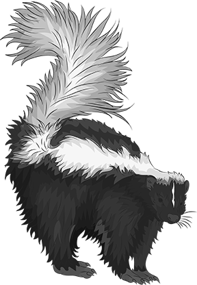
Buu
'Striped Skunk'
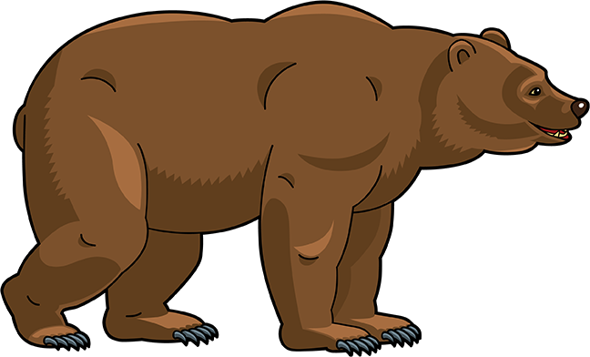
Kapá
'Grizzly Bear'
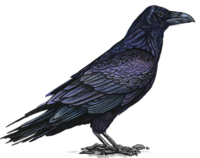
Kook
'Raven'
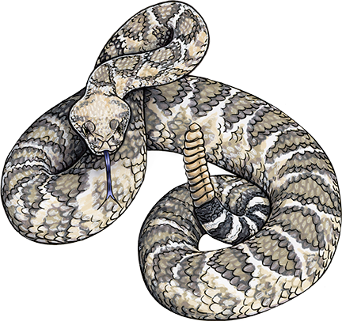
Koymóo
'Rattlesnake'
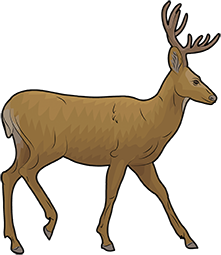
K’ut’
'Deer'
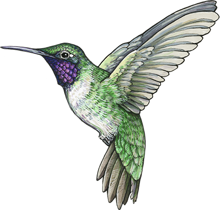
Lisnó
'Hummingbird'
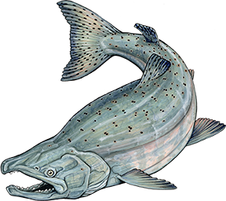
May
'Salmon'
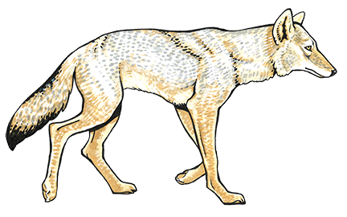
Olé
'Coyote'
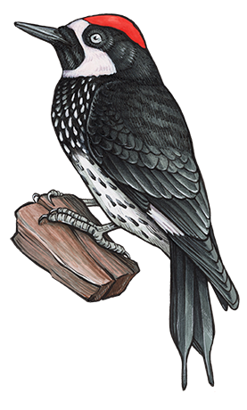
Panák
'Acorn Woodpecker'
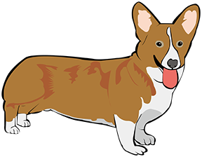
Sukkú
'Dog'
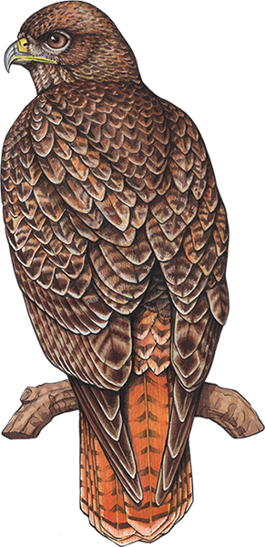
Suuyú
'Red-tailed Hawk'
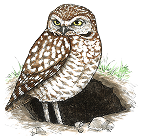
Tokk’óok’
'Burrowing Owl'
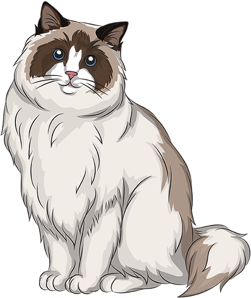
Tonc’í
'Cat'
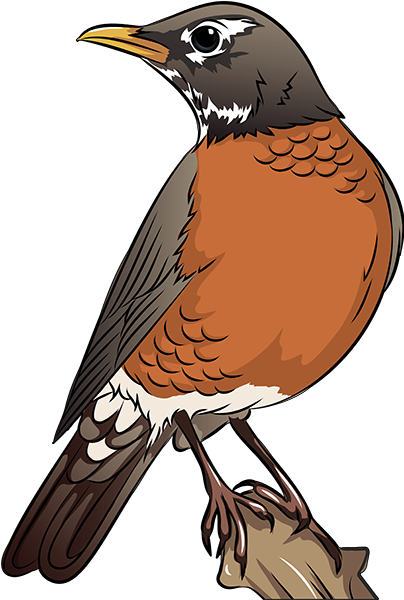
Wistakták
'Robin'
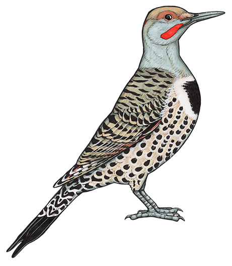
Woololók
'Flickerbird'
More gameplay language
Halém ni!
'I win!'
Heek’áap!
'Hurry up!' (said to 1 person)
Wenném.
'Thank you.'
Do you want to learn more language?
Check out the rest of this website to find other learning resources which you can use at home to learn more language. For example, we also have animal flashcards, printable coloring pages, and kid-friendly games like Go Fish! that you can use to learn more animal names. We also host lots of other resources on this website, like other flashcards that focus on language you can use at home with your children and other loved ones.
If you would like copies of any of our materials or have questions, please visit our offices in Tribal Admin or contact us at language@ssband.org.
We write Nisenan using a special alphabet. For more help reading the words and phrases we share, check out our alphabet guide.
Esak’ahá daak’ábe mi c’aykɨ́? (Do you want to know more?)
About the language: The SSBMI Community has ancestral ties to the Valley and Southern Hill dialects of the Nisenan language through the Tribe's Matriarchs, Pamela Cleanso Adams and Annie Hill Murray Paris. Pamela spoke Valley Nisenan and she, her brother Tom Cleanso, and her daughter Lillie Williams are responsible for passing on most of the knowledge we have of this dialect today. We have less direct info about Annie’s language; based on where she was from and language from her relations and associates, she likely spoke Southern Hill Nisenan.
The Nisenan language that we share is from speakers of the Valley dialect like Pamela and Tom as well as speakers of the Southern Hill dialect like William Joseph (a.k.a. Bill Joe), Ida Hill Starkey, Charlie Hunchup, and Amanda Winn. Valley Nisenan (Pamela's dialect) and Southern Hill Nisenan (Annie's dialect) are similar to one another in many respects, though they differ in the word for 'hummingbird':
Hummingbird:
Lisnó
(Valley Nisenan)
Liic’iic’í
(Southern Hill Nisenan)
About number words in Nisenan: While playing Bingo, we call out a number followed by an animal name to indicate which spaces players should cover. For example, "Sappúy, Olé" means that they should cover any Coyote in the 3 column on their cards. This is literally "three, coyote".
However, this is NOT how you would say "three coyotes" in Nisenan. This is because, when speaking Nisenan, you need to add an ending to the number word to indicate that it modifies the word that follows it. Typically you add -m or -im, which are different forms of the same ending that you use depending on whether the word ends in a vowel (-m) or consonant (-im). For example, you would say sappuyím olé (three coyotes).
Nisenan (as well as other Native American languages) use a lot of word-endings to indicate the relationships that hold between words in larger structures like sentences. This is in contrast to English, where the order of words is used to indicate the same grammatical relationships.
About our Bingo materials: All images were drawn by Skye Anderson or adapted from clipart from Creazilla by Language Department staff.
If you would like to learn more about how we adapted Bingo as a language game, such as how we chose which animals to use, how we designed our Bingo cards, and who the language comes from, please reach out to us at Language@ssband.org.